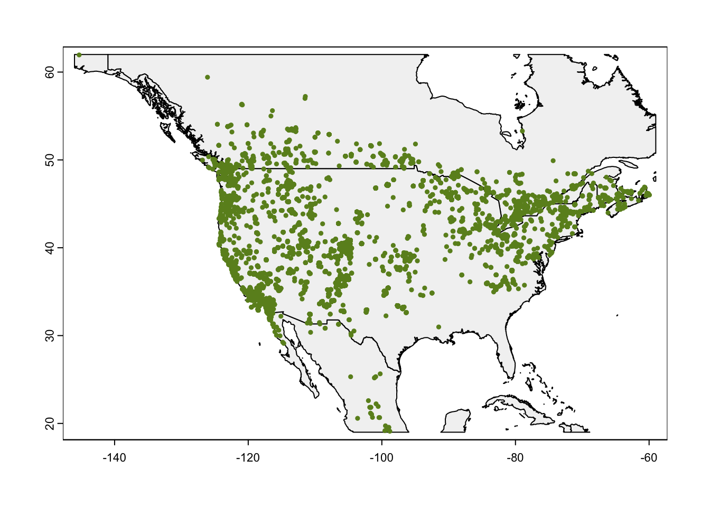
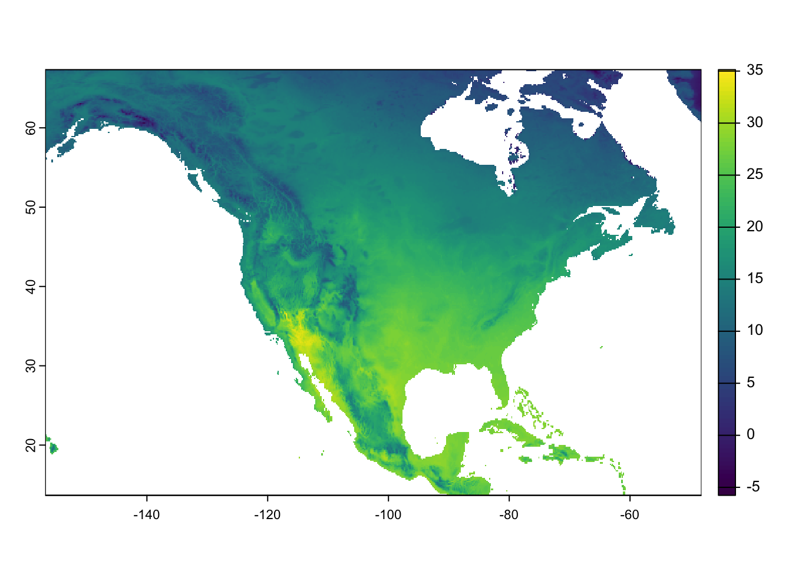
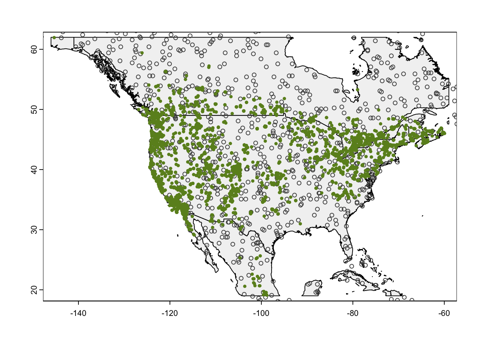
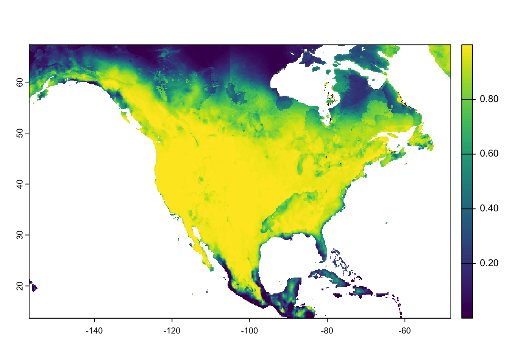
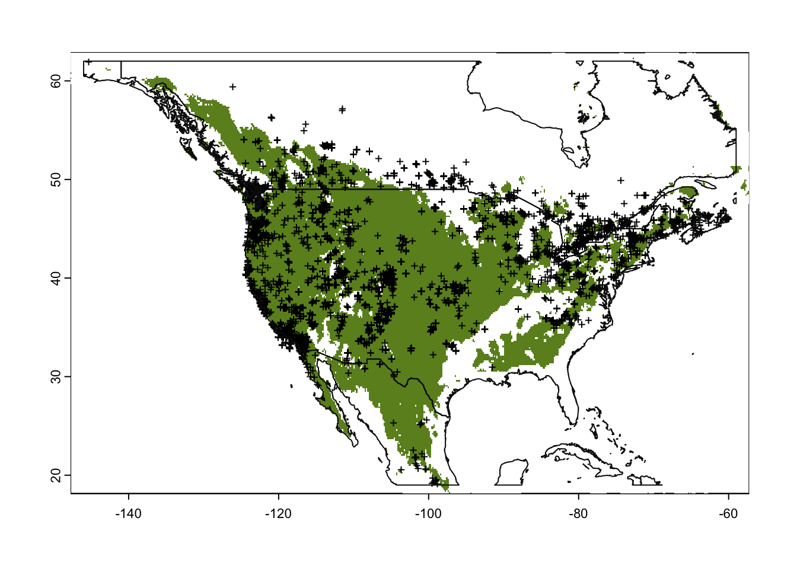

Last updated: 2025-02-14
Checks: 6 1
Knit directory: pman_sdm/
This reproducible R Markdown analysis was created with workflowr (version 1.7.1). The Checks tab describes the reproducibility checks that were applied when the results were created. The Past versions tab lists the development history.
The R Markdown file has unstaged changes. To know which version of
the R Markdown file created these results, you’ll want to first commit
it to the Git repo. If you’re still working on the analysis, you can
ignore this warning. When you’re finished, you can run
wflow_publish to commit the R Markdown file and build the
HTML.
Great job! The global environment was empty. Objects defined in the global environment can affect the analysis in your R Markdown file in unknown ways. For reproduciblity it’s best to always run the code in an empty environment.
The command set.seed(20250214) was run prior to running
the code in the R Markdown file. Setting a seed ensures that any results
that rely on randomness, e.g. subsampling or permutations, are
reproducible.
Great job! Recording the operating system, R version, and package versions is critical for reproducibility.
Nice! There were no cached chunks for this analysis, so you can be confident that you successfully produced the results during this run.
Great job! Using relative paths to the files within your workflowr project makes it easier to run your code on other machines.
Great! You are using Git for version control. Tracking code development and connecting the code version to the results is critical for reproducibility.
The results in this page were generated with repository version a7529c6. See the Past versions tab to see a history of the changes made to the R Markdown and HTML files.
Note that you need to be careful to ensure that all relevant files for
the analysis have been committed to Git prior to generating the results
(you can use wflow_publish or
wflow_git_commit). workflowr only checks the R Markdown
file, but you know if there are other scripts or data files that it
depends on. Below is the status of the Git repository when the results
were generated:
Ignored files:
Ignored: .DS_Store
Ignored: analysis/.DS_Store
Ignored: data/.DS_Store
Untracked files:
Untracked: data/gadm/
Untracked: data/pman_gbif_40k_occ_data.rds
Unstaged changes:
Modified: analysis/sdm_analysis.Rmd
Note that any generated files, e.g. HTML, png, CSS, etc., are not included in this status report because it is ok for generated content to have uncommitted changes.
These are the previous versions of the repository in which changes were
made to the R Markdown (analysis/sdm_analysis.Rmd) and HTML
(docs/sdm_analysis.html) files. If you’ve configured a
remote Git repository (see ?wflow_git_remote), click on the
hyperlinks in the table below to view the files as they were in that
past version.
| File | Version | Author | Date | Message |
|---|---|---|---|---|
| Rmd | a7529c6 | NicoleAdams-sci | 2025-02-14 | add sdm analysis |
| Rmd | 2b05945 | NicoleAdams-sci | 2025-02-14 | initial commit |
| html | 2b05945 | NicoleAdams-sci | 2025-02-14 | initial commit |
Species distribution model (SDM) for Peromyscus maniculatus based on a tutorial by Jeff Oliver.
library(tidyverse)── Attaching core tidyverse packages ──────────────────────── tidyverse 2.0.0 ──
✔ dplyr 1.1.4 ✔ readr 2.1.5
✔ forcats 1.0.0 ✔ stringr 1.5.1
✔ ggplot2 3.5.1 ✔ tibble 3.2.1
✔ lubridate 1.9.4 ✔ tidyr 1.3.1
✔ purrr 1.0.2
── Conflicts ────────────────────────────────────────── tidyverse_conflicts() ──
✖ dplyr::filter() masks stats::filter()
✖ dplyr::lag() masks stats::lag()
ℹ Use the conflicted package (<http://conflicted.r-lib.org/>) to force all conflicts to become errorslibrary(terra)terra 1.8.10
Attaching package: 'terra'
The following object is masked from 'package:tidyr':
extractlibrary(geodata)
library(predicts)
# Download GBIF occurrence data for Peromyscus maniculatus - did previously, don't need to run again
# library(rgbif)
# species_name <- "Peromyscus maniculatus"
# occ_data <- occ_search(
# scientificName = species_name,
# limit = 40000, # Adjust based on your needs
# hasCoordinate = TRUE,
# hasGeospatialIssue = FALSE
# )
# saveRDS(occ_data, "~/Documents/NicoleAdams/pman/maps/pman_gbif_40k_occ_data.rds")
occ_data <- readRDS("~/Documents/NicoleAdams/pman/maps/pman_gbif_40k_occ_data.rds")
# Extract coordinates and convert to data frame
obs_data <- occ_data$data %>%
dplyr::select(decimalLongitude, decimalLatitude) %>%
filter(!is.na(decimalLongitude) & !is.na(decimalLatitude)) %>%
rename("longitude"=decimalLongitude, "latitude"=decimalLatitude)
# Download bioclim data - all variables, only the USA, at a 10 minutes of a degree resolution ** don't download big files to GitHub repo
bioclim_data <- worldclim_global(var = "bio", res = 10, path = "~/Documents/NicoleAdams/worldClimData/")
# var = "bio": This tells worldclim_global() that we want to download all 19 of the bioclimatic variables
# res = 10: This is the resolution of the data we want to download; in this case, it is 10 minutes of a degree
# path = "data/": Finally, this sets the location to which the files are downloaded
# Once downloaded, you don't need to run that first line, instead you can call the data locally
bioclim_dir <- "~/Documents/NicoleAdams/worldClimData/climate/wc2.1_10m/"
bioclim_files <- list.files(bioclim_dir, pattern = "\\.tif$", full.names = T)
# load all the files into a raster stack -- function written by claude.ai
process_bioclim_stack <- function(bioclim_files) {
# Check if terra package is installed and loaded
if (!requireNamespace("terra", quietly = TRUE)) {
stop("Please install the terra package: install.packages('terra')")
}
# Standard bioclim variable names
bio_names <- c(
"bio1" = "Annual Mean Temperature",
"bio2" = "Mean Diurnal Range",
"bio3" = "Isothermality",
"bio4" = "Temperature Seasonality",
"bio5" = "Max Temperature of Warmest Month",
"bio6" = "Min Temperature of Coldest Month",
"bio7" = "Temperature Annual Range",
"bio8" = "Mean Temperature of Wettest Quarter",
"bio9" = "Mean Temperature of Driest Quarter",
"bio10" = "Mean Temperature of Warmest Quarter",
"bio11" = "Mean Temperature of Coldest Quarter",
"bio12" = "Annual Precipitation",
"bio13" = "Precipitation of Wettest Month",
"bio14" = "Precipitation of Driest Month",
"bio15" = "Precipitation Seasonality",
"bio16" = "Precipitation of Wettest Quarter",
"bio17" = "Precipitation of Driest Quarter",
"bio18" = "Precipitation of Warmest Quarter",
"bio19" = "Precipitation of Coldest Quarter"
)
# Create SpatRaster
r_stack <- terra::rast(bioclim_files)
# Set names based on file order
# Assuming files are numbered 1-19 in their names
layer_numbers <- gsub(".*([0-9]{1,2}).*", "\\1", bioclim_files)
layer_numbers <- as.numeric(layer_numbers)
# Sort files by layer number
sorted_indices <- order(layer_numbers)
r_stack <- r_stack[[sorted_indices]]
# Assign standard names
names(r_stack) <- paste0("bio", 1:terra::nlyr(r_stack))
# Add descriptions to layer names
names(r_stack) <- bio_names[names(r_stack)]
return(r_stack)
}
bioclim_stack <- process_bioclim_stack(bioclim_files)
# Find general latitudinal and longitudinal boundaries and store this information for later use. We use the ceiling() and floor() to round up and down, respectively, to the nearest integer:
max_lat <- ceiling(max(obs_data$latitude))
min_lat <- floor(min(obs_data$latitude))
max_lon <- ceiling(max(obs_data$longitude))
min_lon <- floor(min(obs_data$longitude))
# Store boundaries in a single extent object
geographic_extent <- ext(x = c(min_lon, max_lon, min_lat, max_lat))
# Download data with geodata's world function to use for our base map
world_map <- world(resolution = 3, path = "data/") # ** don't download big files to GitHub repo
# Crop the map to our area of interest
my_map <- crop(x = world_map, y = geographic_extent)
# Plot the base map
plot(my_map,
axes = TRUE,
col = "grey95")
# Add the points for individual observations
points(x = obs_data$longitude,
y = obs_data$latitude,
col = "olivedrab",
pch = 20,
cex = 0.75)
# Make an extent that is 25% larger
sample_extent <- geographic_extent * 1.25
# Crop bioclim data to desired extent
bioclim_data <- crop(x = bioclim_stack, y = sample_extent)
# Plot the first of the bioclim variables to check on cropping
plot(bioclim_data[[1]])
Randomly samples points from a given geographic area and treats them like locations where the species of interest is absent
# create a set of 1000 background (aka pseudo-absence) points at random, and add these to our data
# Set the seed for the random-number generator to ensure results are similar
set.seed(20251402)
# Randomly sample points (same number as our observed points)
background <- spatSample(x = bioclim_data,
size = 1000, # generate 1,000 pseudo-absence points
values = FALSE, # don't need values
na.rm = TRUE, # don't sample from ocean
xy = TRUE) # just need coordinates
# Look at first few rows of background
# head(background)
# Plot the base map
plot(my_map,
axes = TRUE,
col = "grey95")
# Add the background points
points(background,
col = "grey30",
pch = 1,
cex = 0.75)
# Add the points for individual observations
points(x = obs_data$longitude,
y = obs_data$latitude,
col = "olivedrab",
pch = 20,
cex = 0.75)
# Pull out coordinate columns, x (longitude) first, then y (latitude) from
# saguaro data
presence <- obs_data[, c("longitude", "latitude")]
# Add column indicating presence
presence$pa <- 1
# Convert background data to a data frame
absence <- as.data.frame(background)
# Update column names so they match presence points
colnames(absence) <- c("longitude", "latitude")
# Add column indicating absence
absence$pa <- 0
# Join data into single data frame
all_points <- rbind(presence, absence)
# Reality check on data
# head(all_points)
bioclim_extract <- extract(x = bioclim_data,
y = all_points[, c("longitude", "latitude")],
ID = FALSE) # No need for an ID column
# join these extracted data back with our all_points data frame bc data frame doesn’t have the coordinate information and, more importantly, doesn’t indicate which rows are presence points vs absence
# Add the point and climate datasets together
points_climate <- cbind(all_points, bioclim_extract)
# Identify columns that are latitude & longitude
drop_cols <- which(colnames(points_climate) %in% c("longitude", "latitude"))
drop_cols # print the values as a reality check[1] 1 2# Remove the geographic coordinates from the data frame
points_climate <- points_climate[, -drop_cols]
Reserve 20% of the data for testing, so we use the folds() function from the predicts package to evenly assign each point to a random group. To make sure we have roughly representative sample of both presence and pseudo-absence points, we use the pa column to tell R that our data has these two sub-groups
# Create vector indicating fold
fold <- folds(x = points_climate,
k = 5,
by = points_climate$pa)
table(fold)fold
1 2 3 4 5
8200 8200 8200 8200 8200
any observations in fold 1 will be testing data, and any observations in the other folds (2, 3, 4, 5) will be training data.
testing <- points_climate[fold == 1, ]
training <- points_climate[fold != 1, ]
# Build a model using training data
glm_model <- glm(pa ~ ., data = training, family = binomial())
# R to predict the value in the pa column based on values in all the remaining columns. That is, instead of listing the names of all the bioclimatic variables (pa ~ bio1 + bio2 + bio3...), we can use the dot (.)
# family = binomial(): Because the response variable, pa, only takes values of 0 or 1, we need to indicate this to R
Use model just built to predict the habitat suitability across the entire map
# Get predicted values from the model
glm_predict <- predict(bioclim_data, glm_model, type = "response")
# Print predicted values
# plot shows the probability of occurrence of saguaros across the map. Note the values are all below 1.0.
plot(glm_predict)
# Use testing data for model evaluation
glm_eval <- pa_evaluate(p = testing[testing$pa == 1, ],
a = testing[testing$pa == 0, ],
model = glm_model,
type = "response")
# p = testing[testing$pa == 1, ]: In this case, p stands for presence data, so we pass all the rows in the testing data that correspond to a location where there was a saguaro present (that is, the value in the pa column is equal to 1)
# a = testing[testing$pa == 0, ]: Similarly, a stands for absence data, so we pass all the pseudo-absence rows in our dataset (i.e. all rows where the value in the pa column is equal to 0)
# model = glm_model: This is the model object we are evaluating. One way to think about this is that the glm_model is a calculator that takes bioclimatic data as input and provides probabilities as output
# pa_evaluate() function, we pass data that we “know” what the right answer should be for these probability calculations. That is, the glm_model should predict values close to 1 for those rows that we pass to the p argument (because we know that pman occur at those locations) and it should predict values close to 0 for those rows that we pass to the a argument
# NOTES
# The map presents a categorical classification of whether a particular point on the landscape will be suitable or not for the species of interest. This classification relies quite heavily on the value of the threshold and the pseudo-absence points
#
# Determine minimum threshold for "presence"
glm_threshold <- glm_eval@thresholds$max_spec_sens
# Plot base map
plot(my_map,
axes = TRUE,
col = "grey95")
# Only plot areas where probability of occurrence is greater than the threshold
plot(glm_predict > glm_threshold,
add = TRUE,
legend = FALSE,
col = c(NA, "olivedrab")) # <-- Update the values HERE
# And add those observations
points(x = obs_data$longitude,
y = obs_data$latitude,
col = "black",
pch = "+",
cex = 0.75)
# Redraw those country borders
plot(my_map, add = TRUE, border = "grey5")
sessionInfo()R version 4.3.0 (2023-04-21)
Platform: x86_64-apple-darwin20 (64-bit)
Running under: macOS 15.3
Matrix products: default
BLAS: /Library/Frameworks/R.framework/Versions/4.3-x86_64/Resources/lib/libRblas.0.dylib
LAPACK: /Library/Frameworks/R.framework/Versions/4.3-x86_64/Resources/lib/libRlapack.dylib; LAPACK version 3.11.0
locale:
[1] en_US.UTF-8/en_US.UTF-8/en_US.UTF-8/C/en_US.UTF-8/en_US.UTF-8
time zone: America/New_York
tzcode source: internal
attached base packages:
[1] stats graphics grDevices utils datasets methods base
other attached packages:
[1] predicts_0.1-17 geodata_0.6-2 terra_1.8-10 lubridate_1.9.4
[5] forcats_1.0.0 stringr_1.5.1 dplyr_1.1.4 purrr_1.0.2
[9] readr_2.1.5 tidyr_1.3.1 tibble_3.2.1 ggplot2_3.5.1
[13] tidyverse_2.0.0 workflowr_1.7.1
loaded via a namespace (and not attached):
[1] sass_0.4.9 generics_0.1.3 stringi_1.8.4 hms_1.1.3
[5] digest_0.6.37 magrittr_2.0.3 timechange_0.3.0 evaluate_1.0.3
[9] grid_4.3.0 fastmap_1.2.0 rprojroot_2.0.4 jsonlite_1.8.9
[13] processx_3.8.5 whisker_0.4.1 ps_1.8.1 promises_1.3.2
[17] httr_1.4.7 scales_1.3.0 codetools_0.2-20 jquerylib_0.1.4
[21] cli_3.6.3 rlang_1.1.4 munsell_0.5.1 withr_3.0.2
[25] cachem_1.1.0 yaml_2.3.10 tools_4.3.0 tzdb_0.4.0
[29] colorspace_2.1-1 httpuv_1.6.15 vctrs_0.6.5 R6_2.5.1
[33] lifecycle_1.0.4 git2r_0.35.0 fs_1.6.5 pkgconfig_2.0.3
[37] callr_3.7.6 pillar_1.10.1 bslib_0.8.0 later_1.4.1
[41] gtable_0.3.6 glue_1.8.0 Rcpp_1.0.14 xfun_0.50
[45] tidyselect_1.2.1 rstudioapi_0.17.1 knitr_1.49 htmltools_0.5.8.1
[49] rmarkdown_2.29 compiler_4.3.0 getPass_0.2-4